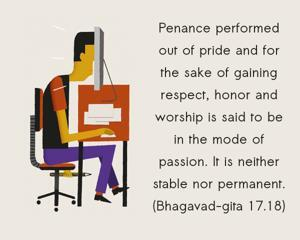
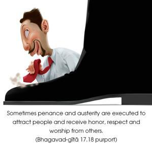
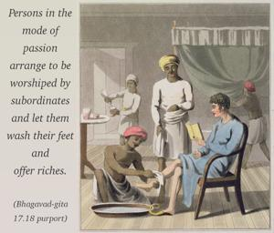

Penance performed out of pride and for the sake of gaining respect, honor and worship is said to be in the mode of passion. It is neither stable nor permanent.



Sometimes penance and austerity are executed to attract people and receive honor, respect and worship from others. Persons in the mode of passion arrange to be worshiped by subordinates and let them wash their feet and offer riches. Such arrangements artificially made by the performance of penances are considered to be in the mode of passion. The results are temporary; they can be continued for some time, but they are not permanent.